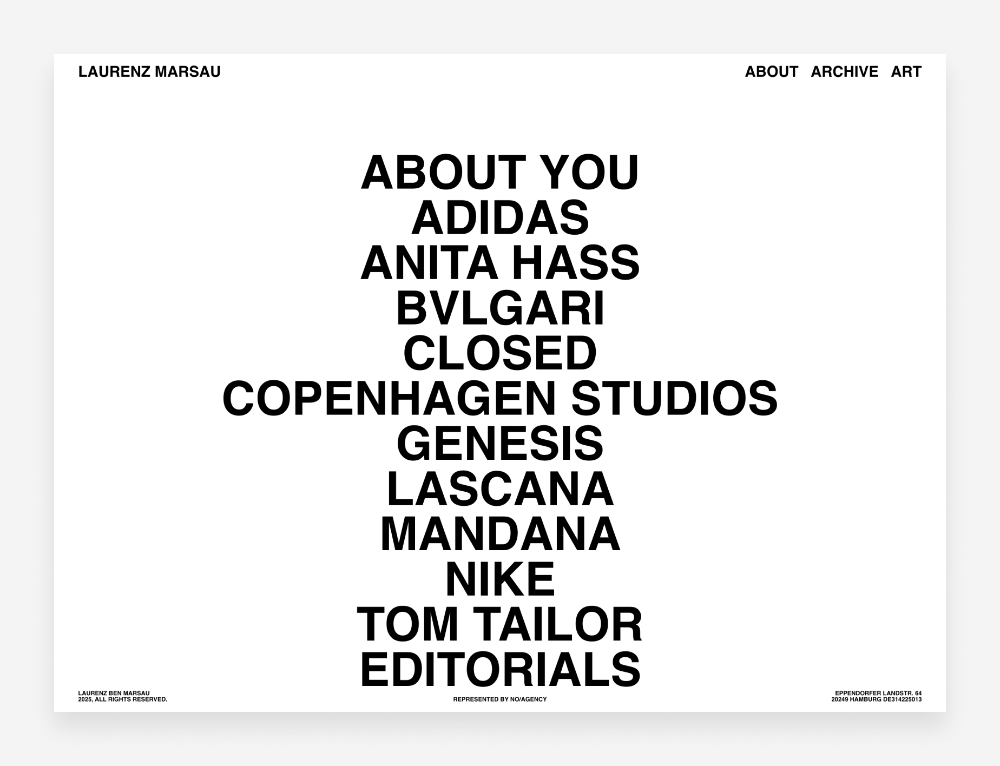
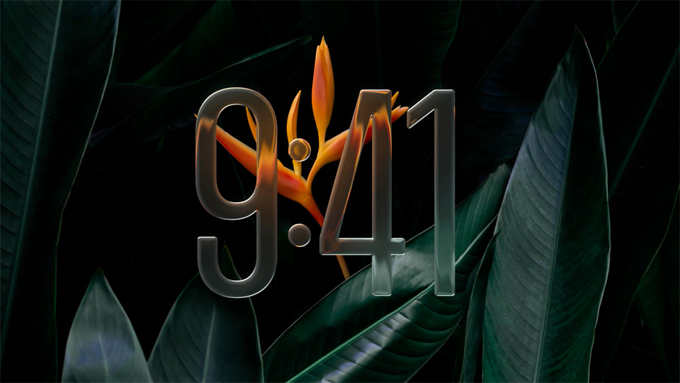
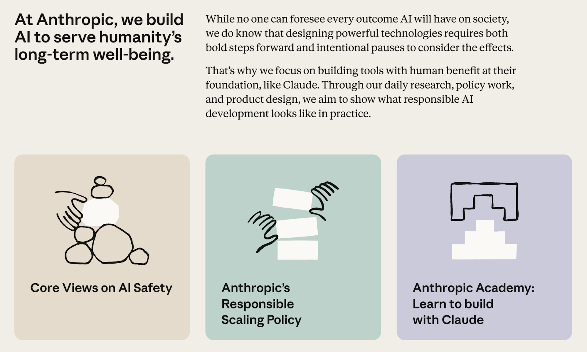
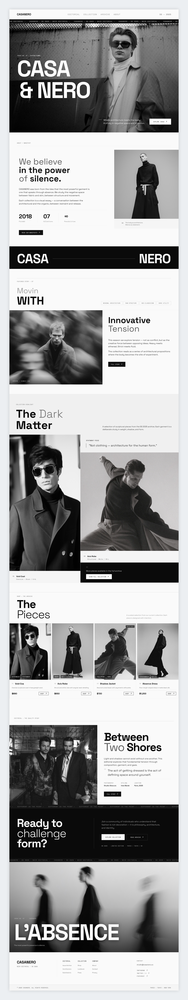
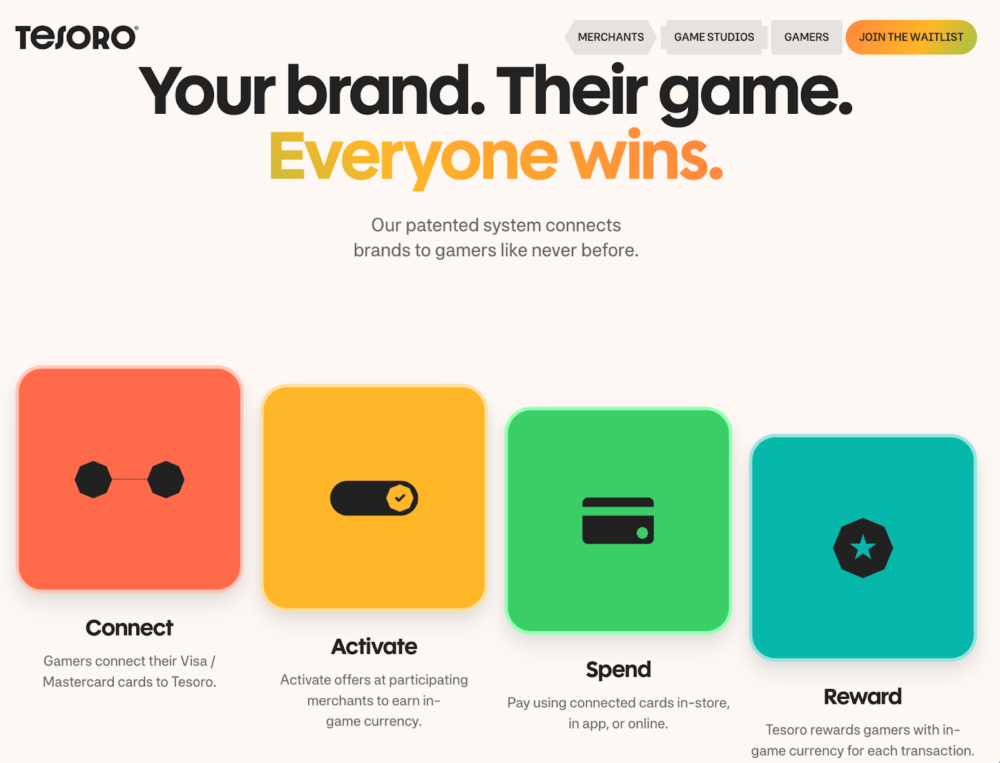
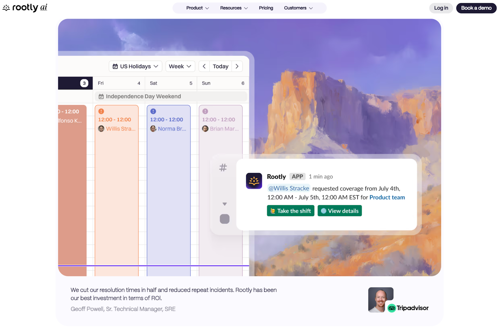
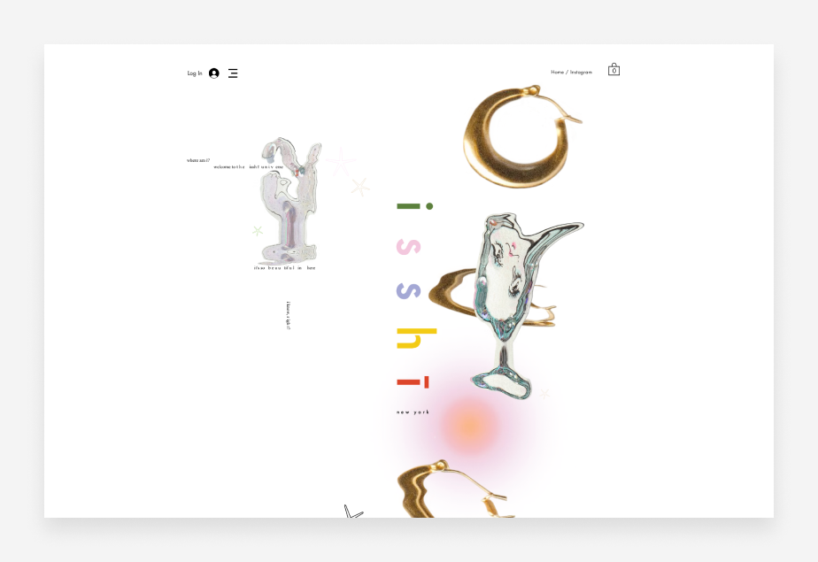
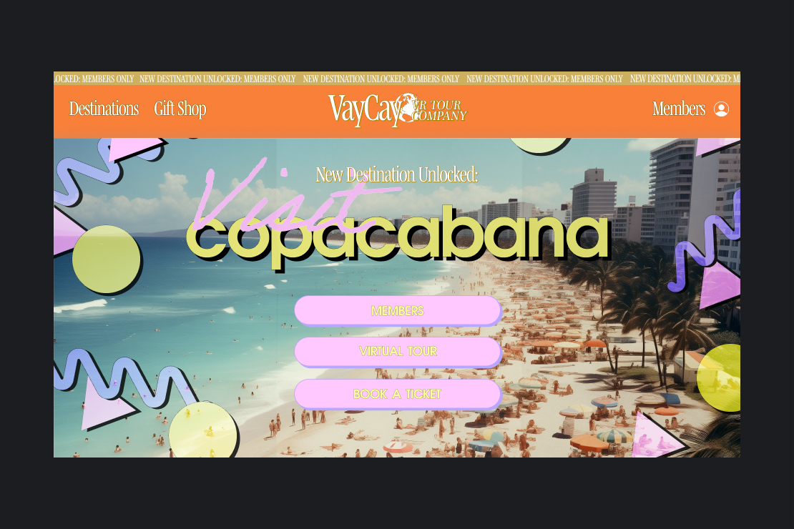
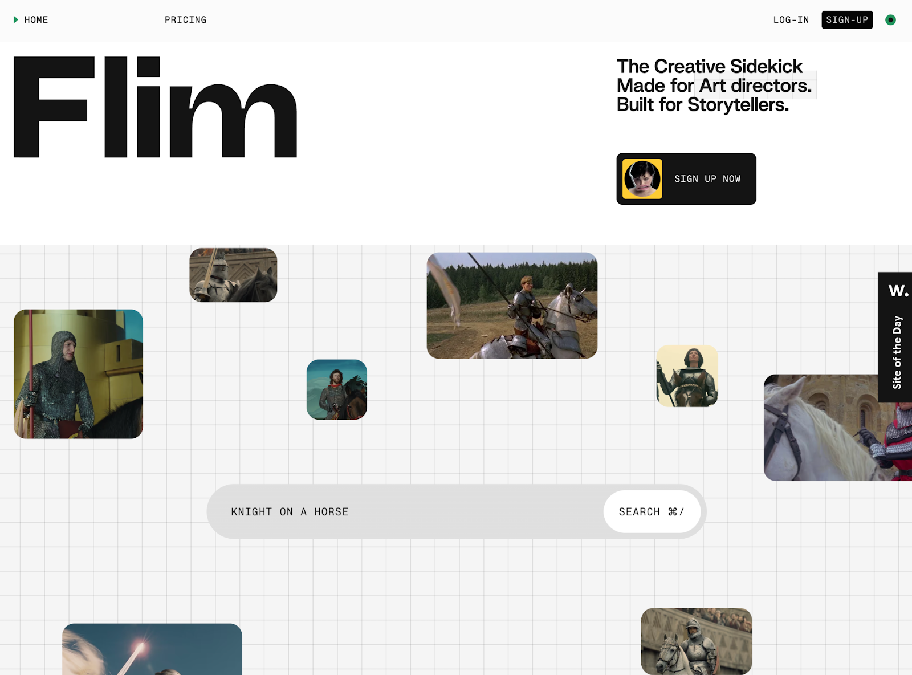

Find a visual direction.
Explore the references, then choose the details to carry into the design.
Click an image to open it at full size in a new tab.
Quiet / minimalist
Restrained decoration, strong typography and generous breathing room.
Ruul
Ruul; screenshot published by Webflow · Source ↗
A spacious monochrome hero with concise copy and one prominent entry point.

Open image ↗Laurenz Marsau
Laurenz Marsau; screenshot published by Wix · Source ↗
Oversized type and open space turn a project index into the main composition.
What to watch
Keep controls discoverable; calm must not become faint or empty.
Liquid Glass
Translucent layers, reflective edges and controls floating above content.
Apple Music controls
Apple · Source ↗
Floating playback and navigation layers reveal the imagery underneath.

Open image ↗Apple lock-screen material
Apple · Source ↗
Reflective numerals demonstrate a glass treatment over a dark photographic scene.
What to watch
Check contrast over changing backgrounds and retain an opaque fallback.
Warm / organic
Earthy color, soft forms and a human visual character.
Gormley & Gamble
Gormley & Gamble; screenshot published by Wix · Source ↗
A cream canvas, sage texture and organic lettering create a warm identity.

Open image ↗Anthropic
Anthropic; screenshot published by Webflow · Source ↗
Paper-colored surfaces pair serif text with simple illustrated shapes.
What to watch
Preserve text contrast and intentional shapes; avoid decorative clutter.
Editorial / typography-led
Dramatic type, art-directed imagery and varied reading rhythm.
Vertical portfolio template
Tamas Bodo · Source ↗
A split composition combines oversized type, fine rules and monochrome imagery.

Open image ↗CASA NERO
Elux Space · Source ↗
Fashion photography and alternating type-and-image sections create an editorial rhythm.
What to watch
Strong composition still needs readable text and a clear reading order.
Expressive / playful
Confident color, distinctive shapes and lively visual emphasis.
Material 3 Expressive
Google · Source ↗
Bold color and contrasting control shapes emphasize different actions and roles.

Open image ↗Tesoro
Tesoro; screenshot published by Webflow · Source ↗
A multicolor palette and shaped panels give the page an energetic character.
What to watch
Keep meaning clear without relying only on color or animation.
Tactile / handcrafted
Illustration, print texture and a deliberately handmade feel.
Dopple Press
Dopple Press; screenshot published by Wix · Source ↗
Paper texture, illustrated characters and print-like lettering carry the identity.

Open image ↗Rootly
Rootly; screenshot published by Webflow · Source ↗
A painted landscape frames product UI as an illustrated composition.
What to watch
Use coherent assets and keep textures away from essential text contrast.
Brutalist / utilitarian
Raw typography, exposed structure and unconventional arrangements.
Pencil
Pencil; screenshot published by Webflow · Source ↗
Large direct typography and ASCII imagery create a raw, tool-like treatment.

Open image ↗Isshī
Isshī; screenshot published by Wix · Source ↗
Sparse controls and unconventional object placement illustrate the anti-design end of this family.
What to watch
Experimental presentation still needs obvious navigation and usable targets.
Retro / nostalgic
Period typography, early-web motifs and deliberately nostalgic color.
Ryan Haskins
Ryan Haskins; screenshot published by Wix · Source ↗
Glossy lettering, oval links and night photography recall early personal websites.

Open image ↗VayCay visual concept
Wix editorial illustration · Source ↗
Memphis-like shapes and bright period colors demonstrate an eighties-inspired direction.
What to watch
Borrow the visual language while keeping contemporary accessibility and behavior.
Immersive / spatial
Scenes, expansive canvases and imagery that become the interface.
Lennnie
Lennnie; screenshot published by Wix · Source ↗
An illustrated room turns site destinations into objects within a scene.

Open image ↗Flim
Flim; screenshot published by Webflow · Source ↗
A spacious image canvas organizes discovery through freely placed film stills.
What to watch
Provide clear navigation and accessible alternatives to scene or canvas interactions.